Alles für die Kleinen
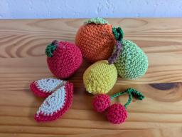
Weiches, gehäkeltes Obst oder Gemüse. Ideal für kleine Hände, langlebig und nachhaltig. Dieses Spielzeug bringt Spielspaß in jede Kinderküche und das ganz ohne Plastik!
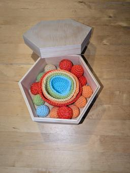
Bei diesem Murmel Sortier Spiel können Murmeln in die dazugehörigen Schälchen sortiert werden. Dabei werden nicht nur die Farben gelernt, sondern auch schon einfaches Zählen, da die Schälchen verschieden groß sind und es jeweils eine unterschiedliche Anzahl von Murmeln gibt. Das Spiel wird in einer handgestalteten Holzbox geliefert.
40,00 €
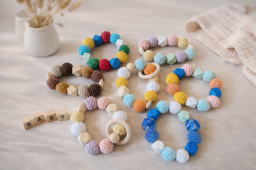
Kleine Babys lieben alles was sie befühlen und erforschen können. Dieses Greifspielzeug aus Holzperlen vereinigt zwei Materialien, nämlich Holz und Wolle. Das perfekte Geschenk für den Nachwuchs. Personalisierung auf Wunsch möglich.
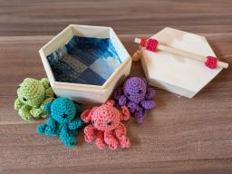
Dieses Spiel ist toll für Kinder ab 2 Jahren. Es fördert Motorik und Konzentration und macht natürlich einfach Spaß! Die mitgelieferte Magnetangel kann praktisch oben am Deckel der Holzkiste verstaut werden. Größe der Box 14x6 cm.
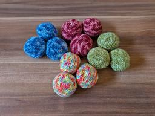
Diese Jonglierbälle sind das perfekte Geschenk für kleine und große Akrobaten und für solche, die es noch werden wollen. Gefüllt sind sie mit Kirschkernen, wodurch sie beim Jonglieren perfekt in der Hand liegen. Kleiner Tipp: Wenn man die Bälle nicht zum Jonglieren verwendet, kann man sie auch kurz in der Mikrowelle erwärmen und hat für kalte Tage perfekte Handwärmer!
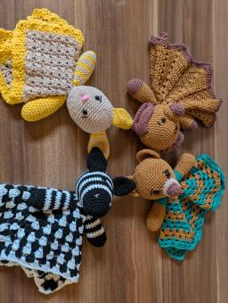
Diese süßen Tuchpuppen Tiere sind das perfekte Babygeschenk. Sie bestehen zu 100% aus Baumwolle und sind dabei gleichzeitig robust und trotzdem kuschelig weich. Sie können bei 30°C in der Maschine gewaschen werden. Diese vier Puppen habe ich als Beispiele gehäkelt, natürlich können auch sämtliche anderen Tiere umgesetzt werden, wenn gewünscht. Größe ca. 26 cm.
25,00 €
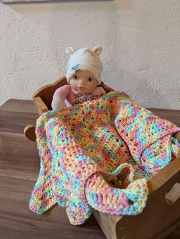
Diese superweiche Kuscheldecke besteht aus Baumwolle und Polyester. Sie kann entweder als kleine Kuscheldecke für das Baby oder Kleinkind genommen werden oder als Puppendecke. Die Decke hat einen Durchmesser von 70 cm und ist bei 30°C in der Maschine waschbar. Durchmesser ca. 70 cm.
39,00 €
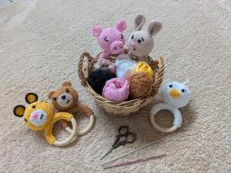
Kuscheln, Fühlen und Lernen ist für die Kleinsten das Größte, um so spielerisch die Welt zu entdecken. Die Greifringe sehen nicht nur niedlich aus, sondern begeistern auch schon die ganz Kleinen, durch verschiedene Formen, Färben und Materialien. Außerdem sind sie eine wunderschöne Geschenkidee zur Geburt. Durchmesser Greifring 8 cm.
12,50 €
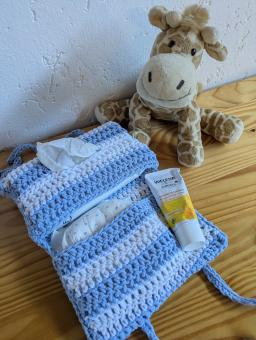
Diese Windeltasche ist der perfekte Begleiter für unterwegs. Sie bietet Platz für Windeln Feuchttücher und Wundcreme. So hat man immer alles praktisch beisammen und nichts kann mehr verloren gehen. Zusammengeklappt ca. 22x15 cm.
18,50 €
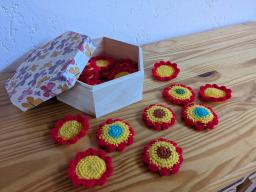
Farbmemory ist ein tolles Spiel für Kinder ab 2 Jahren. Sie können so spielerisch die Farben kennenlernen und das Material läd zum Fühlen und Erforschen ein. Das Spiel kommt in einer schön gestalteten Holzbox. Durchmesser der Box 21 cm, Höhe 9,5 cm.
45,00 €
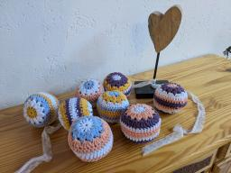
Diese großen, bunten Rasselbälle sind toll zum Spielen für die Kleinsten. Sie fühlen sich wunderbar weich für Babys Hände an und haben ein tolles Muster. Durchmesser ca. 9 cm.
9,00 €
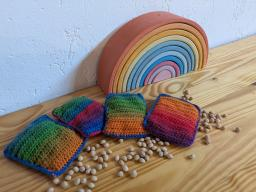
Kirschkernkissen sind wundervolle Geschenke für Babys. Besonders in den ersten Monaten nach der Geburt haben Babys oft noch Bauchschmerzen. Kirschkernsäckchen können diese natürlich lindern und Abhilfe schaffen. Dank ihrer handlichen Größe sind sie ideal für Babys Bauch geeignet. Einfach für 30-60 Sekunden in der Mikrowelle erwärmen. Größe ca. 9x12 cm.
9,00 €
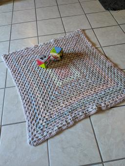
Diese kuschelige Babydecke mit wunderschönem Farbverlauf lässt Baby Herzen höher schlagen. Dank reinem, supersoftem Acryl ist sie ausgesprochen pflegeleicht und angenehm weich zu sanfter Babyhaut. Maschinenwaschbar bei 30°C. Größe ca. 90x90 cm
48,00 €
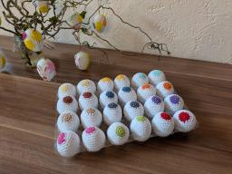
Dieses lustige Eier Farbmemory ist bestens geeignet um die Farben zu lernen und macht nicht nur zu Ostern Spaß
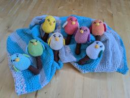
"Diese entzückenden, gehäkelten Vogelrasseln sind der perfekte Begleiter für kleine Hände! Jedes Vögelchen hat ein niedliches Gesicht und sorgt für sanfte Rasselgeräusche. Wähle aus sieben fröhlichen Farben (Gelb, Grün, Hellblau, Orange, Rosa, Lila, Weiß) deinen Favoriten!"
9,00 €
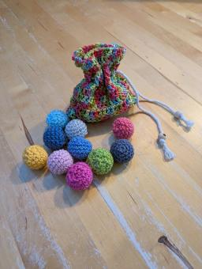
Murmeln sind ein Klassiker unter den Spielen. Diese Murmeln haben jedoch eine Besonderheit, sie sind nämlich aus Wolle. Wie bei ihren Verwandten aus Glas, gibt es sie in vielen verschiedenen Farben und die Spielmöglichkeiten sind beinahe unbegrenzt. Aufbewahrt werden können sie in dem kleinen gehäkelten Beutel und eine Anleitung mit ein paar ersten Spielideen gibt es auch noch dazu! Größe des Säckchens ca. 13x9 cm.
21,50 €
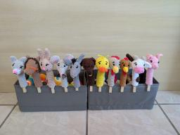
Diese süßen Fingerpuppen sind eine wundervolle Möglichkeit für unsere kleinen Lieblinge ihre ersten Tiere kennenzulernen. Die Farben können je nach Wollanfall und Wunsch variieren.
8,50, 3 Stück 22,00
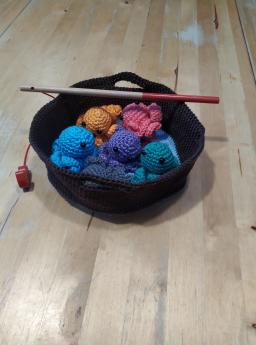
Dieser Unterwasser Angelspaß ist bestens geeignet für Kinder ab zwei Jahren. Es macht den Kleinen nicht nur Spaß, die bunten Tintenfische zu angeln, es fördert auch die Feinmotorik und die Hand-Augen-Koordination. Das perfekte Geschenk für kleine Angler.
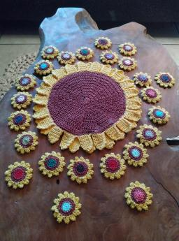
Die Anleitung für das Memoryspiel ist mit vielen Bildern und Erklärungen leicht verständlich. Farbmemory ist ein tolles Spiel für Kinder ab 2 Jahren. Sie können so spielerisch die Farben kennenlernen und das Material läd zum fühlen und erforschen ein. In der großen Blume kann dann alles praktisch verstaut werden, so dass nichts verloren gehen kann.
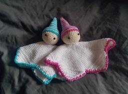
Tuchpuppen sind etwas wundervolles für Babys und Kleinkinder. Zum Kuscheln und Liebhaben sind sie einfach wunderbare Geschenke. Und selbstgehäkelt sind sie etwas ganz Besonderes. Größe ca. 22 cm.
21,50 €
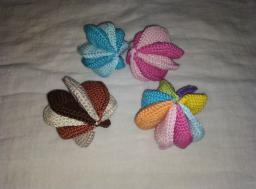
Gehäkeltes Spielzeug ist für Babys und Kleinkinder toll zum Anfassen und Erkunden. Die Materialien sind sehr robust und lange haltbar. Mit eingenähtem Knisterpapier für noch mehr Spielspaß! Größe ca. 9 cm.
19,00 €

Kirschkernkissen sind wundervolle Geschenke für Babys, aber auch für Erwachsene. Besonders in der kalten Jahreszeit spenden sie wundervolle Wärme. Durchmesser ca . 15 cm.
17,00 €
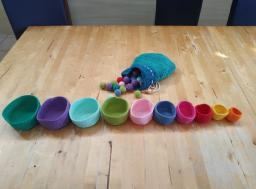
Bei diesem Murmel Sortier Spiel können Murmeln in die dazugehörigen Schälchen sortiert werden. Dabei werden nicht nur die Farben gelernt, sondern auch schon einfaches Zählen, da die Schälchen verschieden groß sind und es jeweils eine unterschiedliche Anzahl von Murmeln gibt.
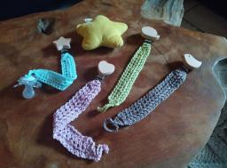
Ein Schnullerband ist unverzichtbar für alle die ihre Schnuller nicht dauernd vom Boden aufsammeln wollen. Selbst gehäkelt sind sie außerdem ein echter Hingucker.
5,00 €
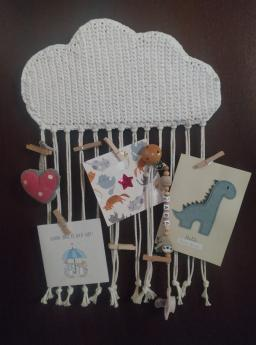
Diese zwei Wandaufhänger sind perfekt, um kleine Erinnerungen in Szene zu setzen. Egal, ob Postkarten, Schnullerband oder kleine Geschenke zur Geburt. Ein echter Hingucker in jedem Kinderzimmer.
55,00 € je Aufhänger
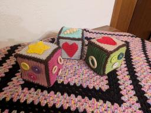
Dieses klassische Babyspielzeug ist einfach immer toll als Geschenk zur Geburt oder für Babys. Selbstgehäkelt sind sie wirklich immer etwas Besonderes. Größe ca. 12x12x12 cm. Farbwünsche und Personalisierung möglich.
36,00 €
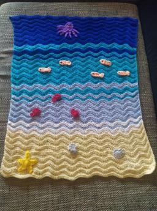
Super weiche, gehäkelte Babydecke, die das Baby ganz sicher lieben wird. Die Applikationen laden außerdem zum Entdecken ein. Größe ca. 65x70 cm.
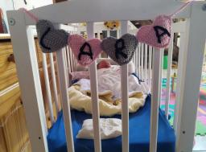
Diese gehäkelte Namenskette ist ein tolles Geschenk zur Geburt. Bitte Farbwünsche und Name mitteilen! Größe pro Herz ca. 9x7 cm.